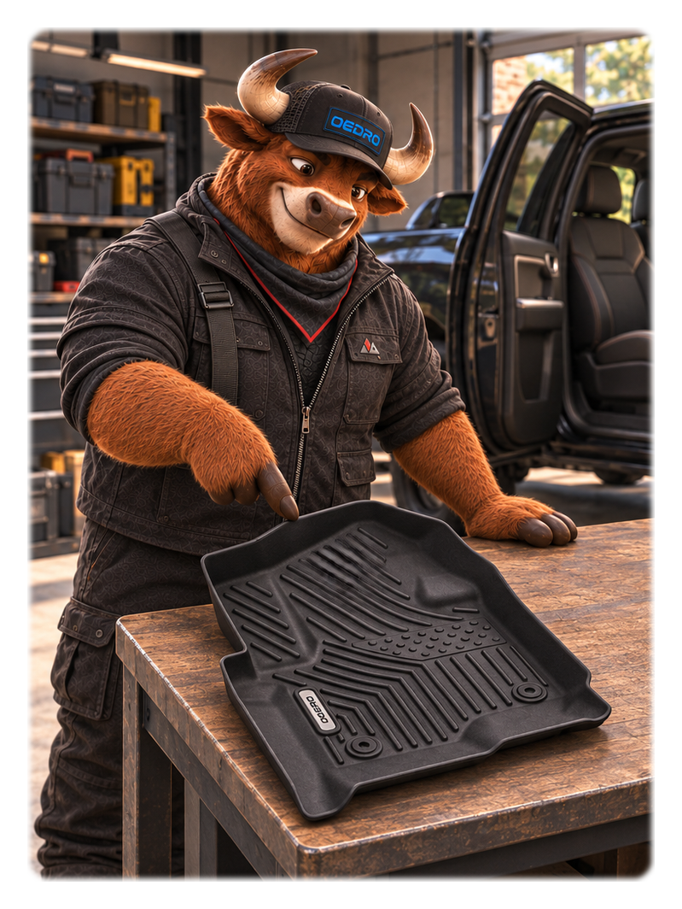

OEDRO Visual Manual
Practical rules for garage-ready layouts: light ground, blue accent, honest product shapes and daylight scenes. Use this manual with the OEDRO icons, templates and Bruno sheet.
Asset inventory
| Asset | Availability | Source and location | Open item |
|---|---|---|---|
| Logo suite | Partial | Supplied company artwork | Brand-owned alternate marks and placement specifications. |
| Color | Working palette | Internal visual production guide | Brand-owner print and cross-media master values. |
| Typography | Working fonts | Open-font references in the internal guide | Brand-owned fonts and proprietary licensing confirmation. |
| Icons and illustration | Available | In-house icons and existing illustration direction | — |
| Templates | Available | In-house editable Feed and Story SVGs | — |
| Source files | Mixed provenance | 969 official product images in the indexed archive, plus in-house SVGs and PNGs. | Brand-owned editable originals for missing lockups. |
| Brand manual | Available | In-house visual production manual | Corporate identity and print approval. |
Logo
Use the blue SVG or PNG exactly as supplied, with no recoloring, stretching or effects. Monochrome, reverse and print versions are not confirmed, so ask the brand team before using any.
Colors
Use a light ground with a blue accent. Keep dark matte rubber and metal readable instead of crushing them to black. Leave plenty of light space around product images.
#172B3A#17629D#4A606E#F5F3EC#FFFFFF#EAF1F5#97572D#B5C4CCTypography
Use clean, readable type with a clear size hierarchy. Corporate font ownership and authorization are unverified, so approved workflows should get typography entitlement and usage rules from the brand team.
Barlow Condensed · Source Sans 3
Illustration and icons
Show visible garage daylight and honest product geometry. Bruno appears only as the adult bull, never as a mechanic. Don't suggest safety or fitment unless it has been verified.

Editable templates
Editable Feed (1080x1350 px) and Story (1080x1920 px) SVG layouts use the same icon set. Keep headline, product and logo in their placeholders, and leave clear space around the logo.
Source files and export
Product images come from the indexed official OEDRO media library, 969 photos. Logo files are only the supplied blue SVG and PNG preview from company design.
Before release: confirm the logo is unchanged, the product shape is accurate, no safety or fitment claim appears, and character and icon minimum sizes are met.